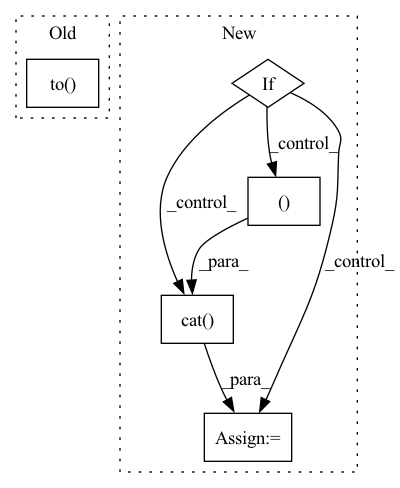

Pattern ID :2933

Before Change
if not self.training: // inference
if self.grid[i].shape[2:4] != x[i].shape[2:4]:
self.grid[i] = self._make_grid(nx, ny).to(x[i].device)
y = x[i].sigmoid()
y[..., 0:2] = (y[..., 0:2] * 2. - 0.5 + self.grid[i]) * self.stride[i] // xy
After Change
self.grid[i], self.anchor_grid[i] = self._make_grid(nx, ny, i)
y = x[i].sigmoid()
if self.inplace:
y[..., 0:2] = (y[..., 0:2] * 2. - 0.5 + self.grid[i]) * self.stride[i] // xy
y[..., 2:4] = (y[..., 2:4] * 2) ** 2 * self.anchor_grid[i] // wh
else: // for YOLOv5 on AWS Inferentia https://github.com/ultralytics/yolov5/pull/2953
xy = (y[..., 0:2] * 2. - 0.5 + self.grid[i]) * self.stride[i] // xy
wh = (y[..., 2:4] * 2) ** 2 * self.anchor_grid[i] // wh
y = torch.cat((xy, wh, y[..., 4:]), -1)
z.append(y.view(bs, -1, self.no))
return x if self.training else (torch.cat(z, 1), x)
In pattern: SUPERPATTERN
Frequency: 4
Non-data size: 5
Instances
Fragment ID: 9739060
Project Name: pooya-mohammadi/deep_utils
Commit Name: 7d442fe6eef7ccd63661e0463e87358ff795d709
Time: 2021-11-26
Author: practical.ai.programming@gmail.com
File Name: deep_utils/vision/object_detection/yolo/v5/torch/models/yolo.py
M Class Name: Detect
N Class Name: Detect
M Method Name: forward(2)
N Method Name: forward(2)
M Parent Class: nn.Module
N Parent Class: nn.Module
M File Name: deep_utils/vision/object_detection/yolo/v5/torch/models/yolo.py
N File Name: deep_utils/vision/object_detection/yolo/v5/torch/models/yolo.py
M Start Line: 43
M End Line: 55
N Start Line: 54
N End Line: 71
'>
Before Change
else:
// compute normalization
degs = graph.in_degrees().float().clamp(min=1)
norm = th.pow(degs, -0.5).to(feat.device).unsqueeze(1)
// compute (D^-0.5 * A * D^-0.5)^k X
for _ in range(self._k):
After Change
else:
assert edge_weight is None or edge_weight.size(0) == graph.num_edges()
if self._add_self_loop:
graph = graph.add_self_loop()
if edge_weight is not None:
size = (graph.num_nodes(),) + edge_weight.size()[1:]
self_loop = edge_weight.new_ones(size)
edge_weight = torch.cat([edge_weight, self_loop])
else:
graph = graph.local_var()
'>
Fragment ID: 9739054
Project Name: edisonleeeee/graphwar
Commit Name: c43665fd30401c63acbd50175da1880509a52d21
Time: 2021-12-06
Author: cnljt@outlook.com
File Name: graphwar/nn/sgconv.py
M Class Name: SGConv
N Class Name: SGConv
M Method Name: forward(4)
N Method Name: forward(4)
M Parent Class: nn.Module
N Parent Class: nn.Module
M File Name: graphwar/nn/sgconv.py
N File Name: graphwar/nn/sgconv.py
M Start Line: 141
M End Line: 176
N Start Line: 144
N End Line: 171
'>
Before Change
if not self.training: // inference
if self.grid[i].shape[2:4] != x[i].shape[2:4]:
self.grid[i] = self._make_grid(nx, ny).to(x[i].device)
y = x[i].sigmoid()
y[..., 0:2] = (y[..., 0:2] * 2. - 0.5 + self.grid[i]) * self.stride[i] // xy
After Change
def forward(self, x):
z = [] // inference output
for i in range(self.nl):
x[i] = self.m[i](x[i]) // conv
bs, _, ny, nx = x[i].shape // x(bs,255,20,20) to x(bs,3,20,20,85)
x[i] = x[i].view(bs, self.na, self.no, ny, nx).permute(0, 1, 3, 4, 2).contiguous()
if not self.training: // inference
if self.grid[i].shape[2:4] != x[i].shape[2:4] or self.onnx_dynamic:
self.grid[i], self.anchor_grid[i] = self._make_grid(nx, ny, i)
y = x[i].sigmoid()
if self.inplace:
y[..., 0:2] = (y[..., 0:2] * 2. - 0.5 + self.grid[i]) * self.stride[i] // xy
y[..., 2:4] = (y[..., 2:4] * 2) ** 2 * self.anchor_grid[i] // wh
else: // for YOLOv5 on AWS Inferentia https://github.com/ultralytics/yolov5/pull/2953
xy = (y[..., 0:2] * 2. - 0.5 + self.grid[i]) * self.stride[i] // xy
wh = (y[..., 2:4] * 2) ** 2 * self.anchor_grid[i] // wh
y = torch.cat((xy, wh, y[..., 4:]), -1)
z.append(y.view(bs, -1, self.no))
return x if self.training else (torch.cat(z, 1), x)
'>
Fragment ID: 9739050
Project Name: practical-ai/deep_utils
Commit Name: 7d442fe6eef7ccd63661e0463e87358ff795d709
Time: 2021-11-26
Author: practical.ai.programming@gmail.com
File Name: deep_utils/vision/object_detection/yolo/v5/torch/models/yolo.py
M Class Name: Detect
N Class Name: Detect
M Method Name: forward(2)
N Method Name: forward(2)
M Parent Class: nn.Module
N Parent Class: nn.Module
M File Name: deep_utils/vision/object_detection/yolo/v5/torch/models/yolo.py
N File Name: deep_utils/vision/object_detection/yolo/v5/torch/models/yolo.py
M Start Line: 43
M End Line: 55
N Start Line: 54
N End Line: 71